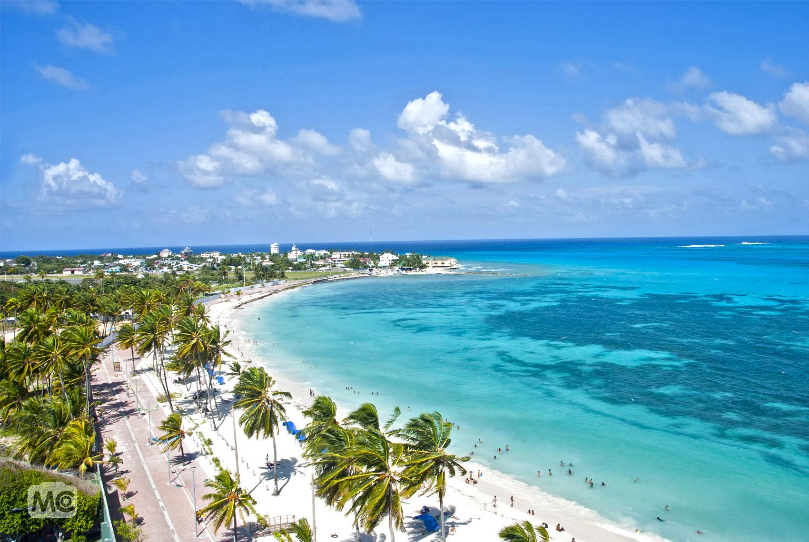

Viajar por Colombia

Viajar por Colombia es una experiencia unica, ya que puedes pasar de usar tu chaqueta mas abrigada en Mosquera-Cundinamarca a usar tu vestido de baño favorito en las piscinas de Mesitas o La Mesa Cundinamarca, con un viaje no mayor a 2 horas, y estos viajes son posibles ya sea en carro, moto, bus o en mi vehiculo favorito La Bicicleta
Destinos Ideales
San Andres
San Andres Islas, es un lugar fantastico, con buena comida , muchos planes, Tambien las playas son hermosos y sus habitantes son muy amables.
Melgar
Melgar es un Municipio del Tolima, es una pueblo con mucha vida, es de ambiente familiar como para irse de fiesta con los amigos, tiene un clima agradable.
Mosquera
Es un Municipio de Cundinamarca, es unos de los mas bellos, en el centro de este puedes encontrar variedad de restaurantes , tambien hay buen comercio y es un lugar tranquilo para vivir.